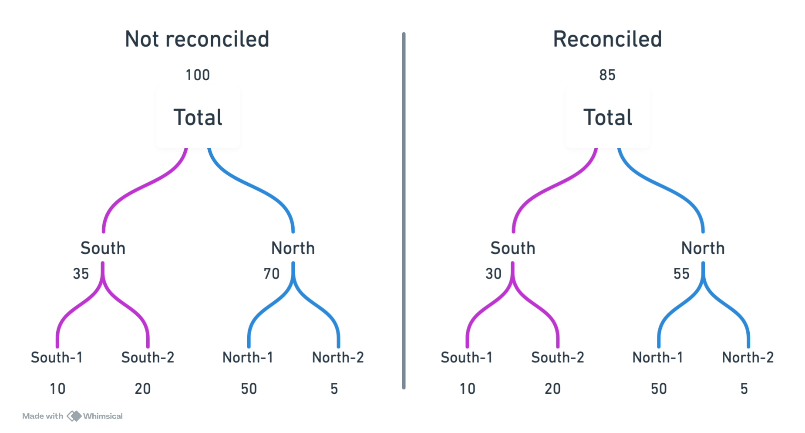
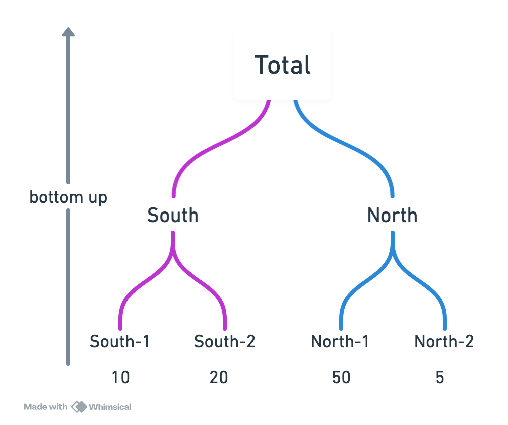
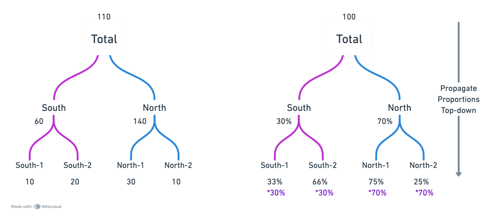
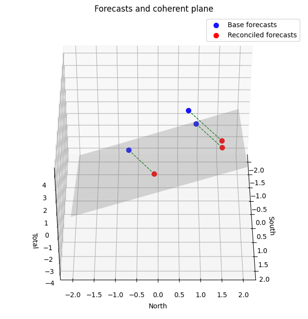
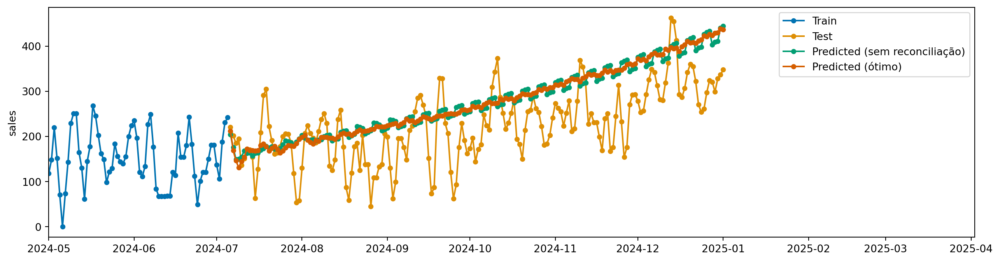

graph TD root["__total"] %% group -1 root --> g_minus1["-1"] g_minus1 --> sku20["20"] g_minus1 --> sku21["21"] g_minus1 --> sku22["22"] g_minus1 --> sku23["23"] g_minus1 --> sku24["24"] %% group 0 root --> g0["0"] g0 --> sku0["0"] g0 --> sku1["1"] g0 --> sku2["2"] g0 --> sku3["3"] g0 --> sku4["4"] %% group 1 root --> g1["..."] %% group 3 root --> g3["3"] g3 --> sku15["15"] g3 --> sku16["16"] g3 --> sku17["17"] g3 --> sku18["18"] g3 --> sku19["19"]
9 Forecasting Hierárquico
Muitas vezes, não apenas temos múltiplas séries temporais, mas essas séries também estão organizadas em uma hierarquia. Por exemplo, vendas de produtos podem ser organizadas por SKU, categoria, departamento e total da loja.
Vamos usar o mesmo dataset sintético, mas agora com uma hierarquia de produtos.
Ao mesmo tempo que dados hierarárquicos são interessantes pois nos trazem mais informação, eles também trazem desafios adicionais. Imagine que queremos prever as vendas futuras de cada produto. Se fizermos previsões independetes para cada produto, não há garantia que a soma das previsões dos produtos será igual à previsão do total da loja. Isso é chamado de incoerência nas previsões hierárquicas. O processo de ajustar as previsões para garantir coerência é chamado de reconciliação.
9.1 Carregando dados
Vamos usar os dados sintéticos, agora com sua versao hierárquica.
from tsbook.datasets.retail import SyntheticRetail
dataset = SyntheticRetail("hierarchical")
y_train, X_train, y_test, X_test = dataset.load("y_train", "X_train", "y_test", "X_test")9.2 Uso de pandas e dados hierárquicos
Agora, os dataframes possuem mais de 2 ou mais índices, representando a hierarquia.
y_train| sales | |||
|---|---|---|---|
| group_id | sku_id | date | |
| -1 | 20 | 2020-01-01 | 0 |
| 2020-01-02 | 0 | ||
| 2020-01-03 | 0 | ||
| 2020-01-04 | 0 | ||
| 2020-01-05 | 2 | ||
| ... | ... | ... | ... |
| __total | __total | 2024-07-01 | 2002 |
| 2024-07-02 | 1617 | ||
| 2024-07-03 | 1917 | ||
| 2024-07-04 | 2383 | ||
| 2024-07-05 | 2463 |
51088 rows × 1 columns
Para obter o número de pontos de série únicos (séries temporais individuais), podemos fazer o seguinte:
y_train.index.droplevel(-1).nunique()31Note que existem algumas séries com um identificador __total. Esse identificador representa o total para aquele nível da hierarquia. Por exemplo, se o id completo é (-1, "__total"), isso representa o total do grupo -1.
y_train.loc[(-1, "__total")].head()| sales | |
|---|---|
| date | |
| 2020-01-01 | 4 |
| 2020-01-02 | 2 |
| 2020-01-03 | 3 |
| 2020-01-04 | 14 |
| 2020-01-05 | 16 |
O total de todas as séries é representado por ("__total", "__total").
y_train.loc[("__total", "__total")]| sales | |
|---|---|
| date | |
| 2020-01-01 | 24 |
| 2020-01-02 | 19 |
| 2020-01-03 | 14 |
| 2020-01-04 | 23 |
| 2020-01-05 | 23 |
| ... | ... |
| 2024-07-01 | 2002 |
| 2024-07-02 | 1617 |
| 2024-07-03 | 1917 |
| 2024-07-04 | 2383 |
| 2024-07-05 | 2463 |
1648 rows × 1 columns
Para contabilizar o número de séries temporais individuais, podemos fazer o seguinte:
y_train.index.droplevel(-1).nunique()319.3 Previsão sem reconciliação
Vamos fazer uma previsão e entender o problema da incoerência.
fh = y_test.index.get_level_values(-1).unique()from tsbook.forecasting.reduction import ReductionForecaster
from lightgbm import LGBMRegressor
forecaster = ReductionForecaster(
LGBMRegressor(n_estimators=100, verbose=-1, objective="tweedie", random_state=42),
window_length=30,
normalization_strategy="divide_mean",
)
forecaster.fit(y_train, X=X_train)
y_pred = forecaster.predict(fh, X=X_test)Para somar as previsões de baixo para cima, podemos usar o transformador Aggregator. Vamos ver que, quando somarmos as previsões das séries filhas, o resultado não é igual à previsão da série total.
from sktime.transformations.hierarchical.aggregate import Aggregator
Aggregator().fit_transform(y_pred) - y_pred| sales | |||
|---|---|---|---|
| group_id | sku_id | date | |
| -1 | 20 | 2024-07-06 | 0.000000 |
| 2024-07-07 | 0.000000 | ||
| 2024-07-08 | 0.000000 | ||
| 2024-07-09 | 0.000000 | ||
| 2024-07-10 | 0.000000 | ||
| ... | ... | ... | ... |
| __total | __total | 2024-12-28 | -303.956496 |
| 2024-12-29 | 276.995900 | ||
| 2024-12-30 | -189.336243 | ||
| 2024-12-31 | 415.699469 | ||
| 2025-01-01 | -148.407308 |
5580 rows × 1 columns
Existe uma diferença… ou seja, os valores não batem. Imagine o impacto de levar previsões incoerentes para a tomada de decisão em uma empresa? A raiz do problema é que temos mais modelos que graus de liberdade. Para ilustrar, suponha que temos 3 séries: \(A\), \(B\) e \(C\), onde:
\[ C(t) = A(t) + B(t) \]
Aqui, temos 3 séries, mas apenas 2 graus de liberdade, pois \(C\) é completamente determinado por \(A\) e \(B\). Se fizermos previsões independentes para \(A\), \(B\) e \(C\), não há garantia de que a relação acima será mantida nas previsões.
9.4 Reconciliação de previsões hierárquicas

Existem diferentes métodos para reconciliar previsões em séries temporais hierárquicas. Não existe uma solução única, e o melhor método depende dos dados e do contexto.
9.5 Bottom-up
A maneira mais simples de reconcialiar previsões hierárquicas é a abordagem bottom-up. Nessa abordagem, fazemos previsões apenas para as séries mais baixas na hierarquia (as séries filhas) e depois somamos essas previsões para obter as previsões das séries superiores (as séries pais).

Lados positivos:
- Simplicidade: fácil de entender e implementar.
- Coerência garantida: a soma das previsões das séries filhas sempre será igual à previsão da série pai.
- Sérias filhas podem capturar detalhes específicos que podem ser perdidos em níveis superiores.
No entanto, essa abordagem também tem desvantagens: é sucetível ao ruído nas séries filhas, e se as séries filhas tiverem pouca informação, as previsões podem ser ruins. Por exemplo, muitos zeros nas séries de níveis baixos pode levar a previsões ruins a niveis agregados.
from sktime.transformations.hierarchical.reconcile import BottomUpReconciler
bottom_up = BottomUpReconciler() * forecaster
bottom_up.fit(y_train)
y_pred_bottomup = bottom_up.predict(fh=fh)Agora vemos que as previsões são coerentes:
Aggregator().fit_transform(y_pred_bottomup) - y_pred_bottomup| sales | |||
|---|---|---|---|
| group_id | sku_id | date | |
| -1 | 20 | 2024-07-06 | 0.0 |
| 2024-07-07 | 0.0 | ||
| 2024-07-08 | 0.0 | ||
| 2024-07-09 | 0.0 | ||
| 2024-07-10 | 0.0 | ||
| ... | ... | ... | ... |
| __total | __total | 2024-12-28 | 0.0 |
| 2024-12-29 | 0.0 | ||
| 2024-12-30 | 0.0 | ||
| 2024-12-31 | 0.0 | ||
| 2025-01-01 | 0.0 |
5580 rows × 1 columns
9.6 Top-down (forecast proportions)
Outra abordagem é a top-down. Nessa abordagem, fazemos previsões apenas para as séries superiores na hierarquia (as séries pais) e depois distribuímos essas previsões para as séries filhas com base em proporções previstas.
Suponha que temos a seguinte hierarquia \(C(t) = A(t) + B(t)\). Considere \(\hat{C}(t)\), \(\hat{A}(t)\) e \(\hat{B}(t)\) como as previsões para \(C\), \(A\) e \(B\), respectivamente. Na abordagem top-down, faríamos o seguinte:
- Prever \(\hat{C}(t)\), \(\hat{A}(t)\) e \(\hat{B}(t)\) independentemente.
- Calcular as proporções previstas para os níveis mais baixos: \[ p_A(t) = \frac{\hat{A}(t)}{\hat{A}(t) + \hat{B}(t)} \]
\[ p_B(t) = \frac{\hat{B}(t)}{\hat{A}(t) + \hat{B}(t)} \]
- Distribuir a previsão de \(C\) para \(A\) e \(B\) usando essas proporções: \[ \tilde{A}(t) = p_A(t) \cdot \hat{C}(t) \]
\[ \tilde{B}(t) = p_B(t) \cdot \hat{C}(t) \]
Essa abordagem é capaz de usufruir da qualidade do forecast total, e ainda consegue distribuir para as séries filhas baseadas no histórico.

O que chamam de “Proporções históricas” é equivalente a esse método, mas com um modelo Naive para prever as proporções.
Esse método pode ser bom quando o forecast total é de boa qualidade. No entanto, dependemos profundamente da qualidade do forecast total e das proporções.
from sktime.transformations.hierarchical.reconcile import TopdownReconciler
top_down_fcst = TopdownReconciler() * forecaster
top_down_fcst.fit(y_train)
y_pred_topdown = top_down_fcst.predict(fh=fh)9.7 Reconciliação ótima
Existe uma abordagem mais sofisticada, com uma intuição geométrica interessante. A ideia é ajustar as previsões iniciais para que elas satisfaçam as restrições de soma da hierarquia. Por exemplo, para a hierarquia \(C(t) = A(t) + B(t)\), queremos garantir que:
\[ \hat{C}(t) = \hat{A}(t) + \hat{B}(t) \]
Se consideramos nosso espaço 3D de observações \((\hat{A}, \hat{B}, \hat{C})\), a condição acima é satisfeita para um plano 2D nesse universo.

Podemos então projetar nossas previsões iniciais nesse plano para obter previsões coerentes. Essa projeção pode ser feita de várias maneiras, levando a diferentes métodos de reconciliação ótima. Os métodos levam o nome “OLS” pois a projeção é feita minimizando o erro quadrático (Ordinary Least Squares).
- OLS : projetar ortogonalmente todas as previsões base na espaço de reconciliação, tratando todas as séries igualmente.
- Weighted OLS: projetar obliquamente, ou seja, considerando pesos diferentes para cada série, permitindo dar mais importância a certas séries na reconciliação. A projeção não faz mais uma perpendicular, mas sim uma oblíqua.
- Minimum trace (MinT): use a matriz de covariância do erro para encontrar as previsões reconciliadas ótimas. Chamado de “ótimo”.
Para a reconciliação ótima com OLS, podemos usar o OptimalReconciler do sktime:
from sktime.transformations.hierarchical.reconcile import OptimalReconciler
optimal = OptimalReconciler("ols") * forecaster
optimal.fit(y_train)
y_pred_optimal = optimal.predict(fh=fh)Code
from sktime.utils.plotting import plot_series
import matplotlib.pyplot as plt
import pandas as pd
idx = y_train.index.droplevel(-1).unique()[10]
plot_series(
y_train.loc[idx,],
y_test.loc[idx,],
y_pred.loc[idx,],
y_pred_optimal.loc[idx,],
labels=["Train", "Test", "Predicted (sem reconciliação)", "Predicted (ótimo)"],
)
plt.xlim(pd.to_datetime("2024-05-01"), None)
plt.show()
Para reconciliações ótimas (que usam a covariância do erro), podemos usar o ReconcilerForecaster do sktime, que internamente já faz o cálculo da covariância do erro:
from sktime.forecasting.reconcile import ReconcilerForecaster
mint_forecaster = ReconcilerForecaster(
forecaster=forecaster,
method="mint_shrink")
mint_forecaster.fit(y_train)
y_pred_mint = mint_forecaster.predict(fh=fh)9.8 Comparando resultados
from sktime.performance_metrics.forecasting import MeanSquaredScaledError
metric = MeanSquaredScaledError(multilevel="uniform_average_time")
pd.DataFrame(
{
"Baseline": metric(y_test, y_pred, y_train=y_train),
"BottomUpReconciler": metric(y_test, y_pred_bottomup, y_train=y_train),
"TopDownReconciler": metric(y_test, y_pred_topdown, y_train=y_train),
"OptimalReconciler (ols)": metric(y_test, y_pred_optimal, y_train=y_train),
"Mint Reconciler": metric(y_test, y_pred_mint, y_train=y_train),
},
index=["Mean Absolute Squared Error"],
)| Baseline | BottomUpReconciler | TopDownReconciler | OptimalReconciler (ols) | Mint Reconciler | |
|---|---|---|---|---|---|
| Mean Absolute Squared Error | 76.656003 | 22.363895 | 96.793563 | 95.197245 | 95.599564 |